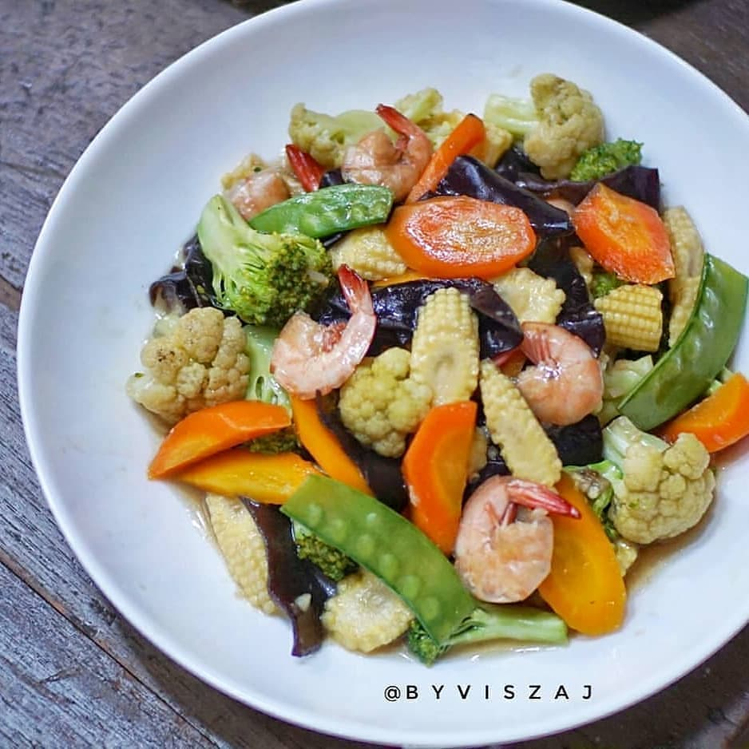

Capcay goreng
Capcay goreng
- Bahan-bahan:
- 10 udang
- 1 wortel besar
- 1 brokoli kecil
- 1/2 kembang kol
- Sedikit Jamur kuping
- Sedikit Kapri
- Sedikit jagung muda
- Bumbu:
- 3 bawang putih, cincang
- 1 cm jahe, cincang
- 2 sdm saos tiram
- 1 sdm kecap asin
- 1 / 2 sdm kecap ikan
- 1 sdm kecap inggris
- 1 sdm maizena(dilarutkan dengan 3 sdm air)
- garam
- air secukupnya
- Cara membuat:
- Cuci sayur dan potong
- potong
- Tumis bawang putih sampai wangi, masukkan jahe cincang dan udang sampai berubah warna
- Masukkan wortel dan air secukupnya, lalu semua bumbu lainnya, cek rasa
- Masukkan semua sayuran lainnya kecuali brokoli.Jangan masak terlalu lama, kira
- kira sayur sudah setengah matang.
- Terakhir masukkan brokoli aduk sebentar lalu larutan maizena.Aduk sampai air berubah agak kental, matikan api.